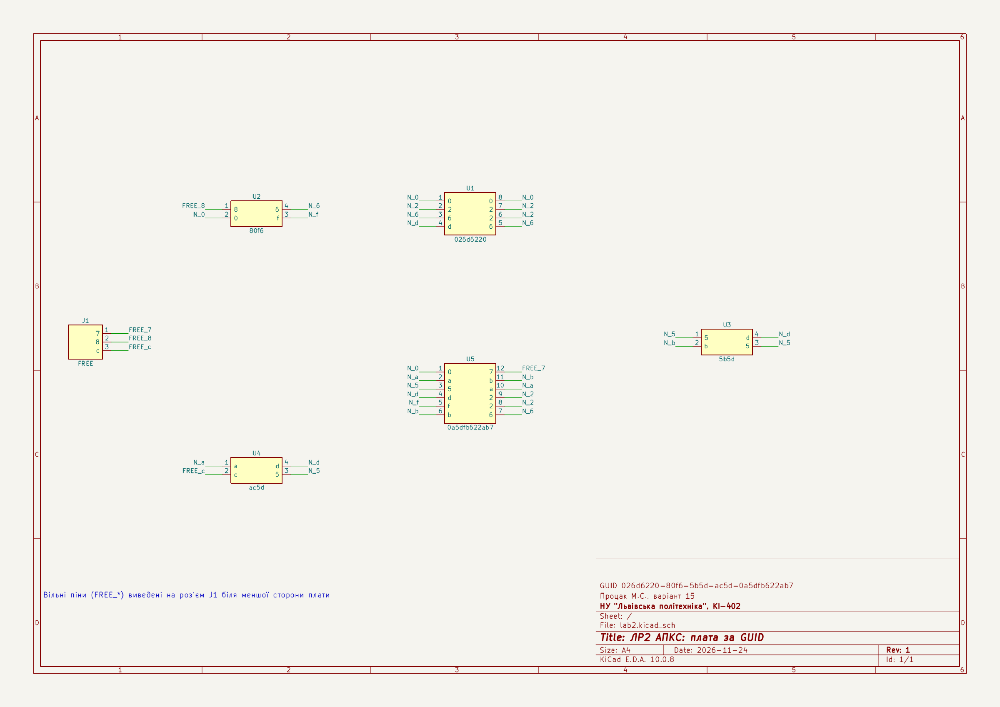
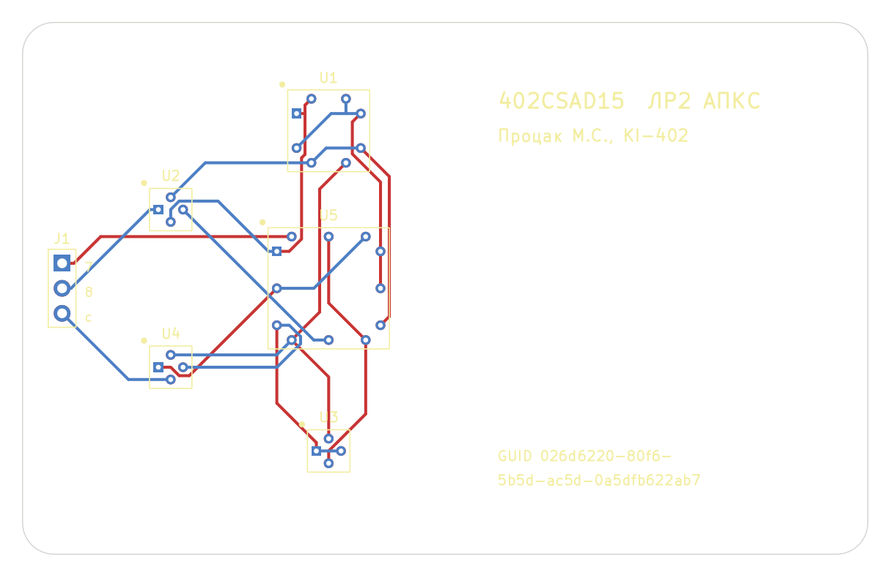
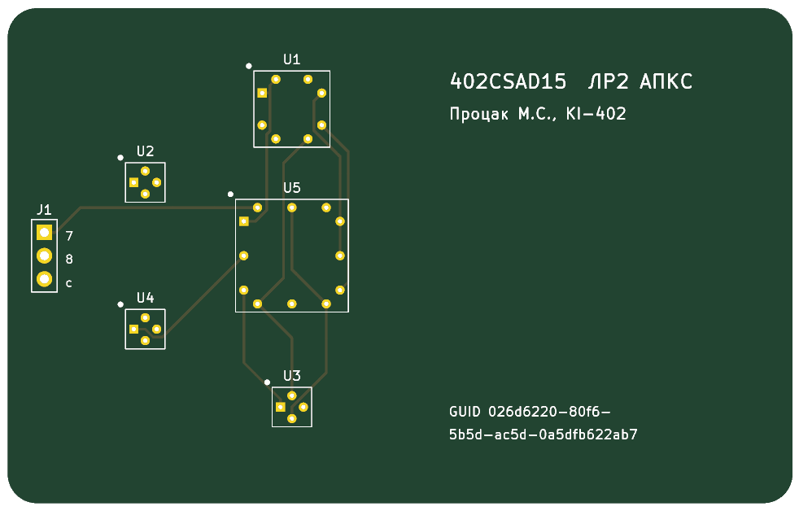
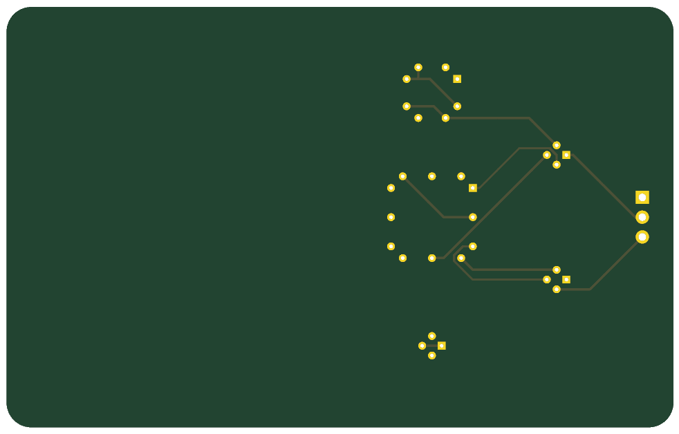

МІНІСТЕРСТВО ОСВІТИ І НАУКИ УКРАЇНИ
НАЦІОНАЛЬНИЙ УНІВЕРСИТЕТ «ЛЬВІВСЬКА ПОЛІТЕХНІКА»
Інститут комп’ютерних технологій, автоматики та метрології
кафедра “Електронних обчислювальних машин”

Звіт
з лабораторної роботи №2
з дисципліни «Автоматизація проєктування комп'ютерних систем»
на тему: «Проєктування та топологія друкованої плати»
Варіант 15
Виконав:
студент групи КІ-402
Процак М.С.
Перевірив:
Шпіцер А.С.
Львів – 2026
ЛАБОРАТОРНА РОБОТА №2
Проєктування та топологія друкованої плати
Мета роботи: набути практичних навичок проєктування друкованих плат у САПР, дотримуючись жорстких конструктивних обмежень, та застосувати навички роботи з нестандартним технічним завданням, що базується на алгоритмічній генерації параметрів.
1. Технічне завдання
- Згенерувати GUID на основі хешування повного імені (Прізвище, Ім'я, По батькові).
- Кожна група GUID — квадратний компонент U1…U5; довжина групи — сторона в мм; кожен символ — пін; однакові символи — рівнозначні піни.
- Створити символи та футпринти U1…U5, з'єднати однакові піни; вільні піни вивести на край однієї меншої сторони плати.
- Плата не більше 85.6 × 53.98 мм (кредитна картка); розміщення «більше зв'язків — ближче»; двошарове трасування без гострих кутів з мінімальною довжиною доріжок.
- Виконати DRC та сформувати комплект Gerber RS-274X.
САПР: KiCad 10.0.8 (методичка допускає EasyEDA, Altium Designer або KiCad). Автотрасувальник — Freerouting 2.1.0 (формат обміну Specctra DSN/SES). Усі етапи відтворюються скриптами (scripts/build.sh): генерація бібліотеки та схеми, ERC, плата, трасування, DRC з перевіркою відповідності схемі, Gerber і зображення.
2. Генерація GUID і розрахунок розмірів елементів
GUID отримано детерміновано як UUID версії 5 (RFC 4122): SHA-1 хеш повного імені в просторі імен NAMESPACE_DNS. Повторний запуск завжди дає той самий результат:
import uuid FULL_NAME = "Процак Максим Степанович" GUID = str(uuid.uuid5(uuid.NAMESPACE_DNS, FULL_NAME)) # -> 026d6220-80f6-5b5d-ac5d-0a5dfb622ab7
GUID: 026d6220-80f6-5b5d-ac5d-0a5dfb622ab7
| Компонент | Група GUID | Довжина групи | Розмір, мм | Піни (№: символ) | Футпринт |
|---|---|---|---|---|---|
| U1 | 026d6220 | 8 символів | 8 × 8 | 1:0, 2:2, 3:6, 4:d, 5:6, 6:2, 7:2, 8:0 | SQ8 |
| U2 | 80f6 | 4 символів | 4 × 4 | 1:8, 2:0, 3:f, 4:6 | SQ4 |
| U3 | 5b5d | 4 символів | 4 × 4 | 1:5, 2:b, 3:5, 4:d | SQ4 |
| U4 | ac5d | 4 символів | 4 × 4 | 1:a, 2:c, 3:5, 4:d | SQ4 |
| U5 | 0a5dfb622ab7 | 12 символів | 12 × 12 | 1:0, 2:a, 3:5, 4:d, 5:f, 6:b, 7:6, 8:2, 9:2, 10:a, 11:b, 12:7 | SQ12 |
Отже: U1 — 8 × 8 мм (8 пінів), U2, U3, U4 — по 4 × 4 мм (4 піни), U5 — 12 × 12 мм (12 пінів); усього 32 піни. Розміри збігаються для будь-якого GUID (формат 8-4-4-4-12), а унікальним для варіанта є набір символів, тобто з'єднання.
3. Таблиця з'єднань
Правило: усі піни з однаковим символом GUID утворюють одне коло N_<символ>. Якщо символ повторюється в межах одного компонента (наприклад «0» у U1 на пінах 1 і 8), це рівнозначні піни, які також з'єднуються. Символи, що трапляються лише один раз, — вільні піни.
| Коло | Символ | Піни | Обґрунтування (входження символу) |
|---|---|---|---|
| N_0 | 0 | U1.1, U1.8, U2.2, U5.1 | U1 («026d6220», поз. 1, 8); U2 («80f6», поз. 2); U5 («0a5dfb622ab7», поз. 1) |
| N_2 | 2 | U1.2, U1.6, U1.7, U5.8, U5.9 | U1 («026d6220», поз. 2, 6, 7); U5 («0a5dfb622ab7», поз. 8, 9) |
| N_5 | 5 | U3.1, U3.3, U4.3, U5.3 | U3 («5b5d», поз. 1, 3); U4 («ac5d», поз. 3); U5 («0a5dfb622ab7», поз. 3) |
| N_6 | 6 | U1.3, U1.5, U2.4, U5.7 | U1 («026d6220», поз. 3, 5); U2 («80f6», поз. 4); U5 («0a5dfb622ab7», поз. 7) |
| N_a | a | U4.1, U5.2, U5.10 | U4 («ac5d», поз. 1); U5 («0a5dfb622ab7», поз. 2, 10) |
| N_b | b | U3.2, U5.6, U5.11 | U3 («5b5d», поз. 2); U5 («0a5dfb622ab7», поз. 6, 11) |
| N_d | d | U1.4, U3.4, U4.4, U5.4 | U1 («026d6220», поз. 4); U3 («5b5d», поз. 4); U4 («ac5d», поз. 4); U5 («0a5dfb622ab7», поз. 4) |
| N_f | f | U2.3, U5.5 | U2 («80f6», поз. 3); U5 («0a5dfb622ab7», поз. 5) |
Вільні піни (символ зустрічається один раз) виведені на роз'єм J1 (1×3, крок 2.54 мм), розміщений біля лівої, меншої (53.98 мм) сторони плати:
| Пін J1 | Коло | Звідки | Символ |
|---|---|---|---|
| J1.1 | FREE_7 | U5.12 | 7 |
| J1.2 | FREE_8 | U2.1 | 8 |
| J1.3 | FREE_c | U4.2 | c |
4. Бібліотечні елементи та принципова схема
Для кожного компонента створено символ (бібліотека lab2.kicad_sym, назви пінів — символи GUID) і футпринт (lab2.pretty):
| Футпринт | Корпус | Розташування пінів | Контактні площадки |
|---|---|---|---|
| SQ4 | 4 × 4 мм | по 1 піну на сторону | THT, Ø1.0 мм, отвір 0.5 мм; пін 1 — квадратна площадка; нумерація проти годинникової стрілки від лівої сторони |
| SQ8 | 8 × 8 мм | по 2 піни на сторону, крок 3.5 мм | |
| SQ12 | 12 × 12 мм | по 3 піни на сторону, крок 3.75 мм | |
| CONN3 | 2.54 × 7.62 мм | 1 × 3, крок 2.54 мм | THT, Ø1.7 мм, отвір 1.0 мм |
З'єднання на схемі виконано мітками кіл (однакова назва мітки = електричне з'єднання). Перевірка ERC: 0 помилок, 0 попереджень. Список кіл, експортований зі схеми, автоматично порівняно з розрахованим за GUID — збіг 11 з 11 кіл.

Рис. 1. Принципова схема з усіма з'єднаннями (KiCad Eeschema)
5. Топологія друкованої плати
Форм-фактор: контур 85.6 × 53.98 мм із радіусом кутів 3.18 мм — розмір кредитної картки ISO/IEC 7810 ID-1, тобто рівно гранично допустимий. Плата двошарова (F.Cu, B.Cu).
Розміщення за правилом «більше зв'язків — ближче»: U5 має спільні кола з усіма іншими компонентами (з U1 — 4 кола, з U2, U3, U4 — по 3), тому стоїть у центрі кластера; U1 і U3 — над і під U5; U2 і U4 мають вільні піни, тому розміщені між U5 і роз'ємом J1 біля лівої короткої сторони.
| Елемент | X, мм | Y, мм |
|---|---|---|
| J1 | 4.0 | 27.0 |
| U1 | 31.0 | 11.0 |
| U2 | 15.0 | 19.0 |
| U3 | 31.0 | 43.5 |
| U4 | 15.0 | 35.0 |
| U5 | 31.0 | 27.0 |
Координати центрів відносно лівого верхнього кута плати.
Трасування: ширина доріжок 0.3 мм, зазор 0.2 мм. Автотрасувальник Freerouting прокладає доріжки лише під кутами 45° (злам 90° — 0, 45° — 36), тож гострих кутів немає. Загальна довжина доріжок — 305.5 мм (F.Cu — 170.1 мм, B.Cu — 135.4 мм), перехідних отворів — 0: двосторонні THT-площадки дозволяють переходити між шарами без via.

Рис. 2. Топологія плати: контур кредитної картки, розміщені компоненти, доріжки F.Cu (червоні) і B.Cu (сині)

Рис. 3. 3D-вигляд плати зверху (kicad-cli pcb render)

Рис. 4. 3D-вигляд плати знизу
6. Звіт DRC
DRC виконано командою kicad-cli pcb drc --schematic-parity --severity-all, яка перевіряє зазори, короткі замикання, непідключені піни та відповідність плати схемі. Результат: 0 порушень, 0 непідключених пінів, 0 розбіжностей зі схемою.
** Drc report for lab2.kicad_pcb **
** Created on 2026-11-24T16:43:58 **
** Report includes: Errors, Warnings, Exclusions **
** Found 0 DRC violations **
** Found 0 unconnected pads **
** Found 0 Footprint errors **
** Ignored checks **
- Footprint has no courtyard defined
- Track endpoint not centered on via
- Tuning profile track geometries
- Footprint doesn't match symbol's footprint filters
- Footprint component type doesn't match footprint pads
** End of Report **
Звіт ERC (схема)
ERC report (2026-11-24T16:43:53, Encoding UTF8)
Report includes: Errors, Warnings, Exclusions
***** Sheet /
** ERC messages: 0 Errors 0 Warnings 0
** Ignored checks:
- Global label only appears once in the schematic
- Four connection points are joined together
- SPICE model issue
- Assigned footprint doesn't match footprint filters
7. Виробничі файли Gerber RS-274X
Сформовано комплект Gerber RS-274X (розширення X2, одиниці мм, формат 4.6) і файл свердління Excellon; архів lab2_gerber.zip придатний для замовлення плати у виробника.
| Файл | Призначення |
|---|---|
| lab2-B_Cu.gbl | мідь, нижній шар |
| lab2-B_Mask.gbs | паяльна маска, низ |
| lab2-B_Silkscreen.gbo | шовкографія, низ |
| lab2-Edge_Cuts.gm1 | контур плати |
| lab2-F_Cu.gtl | мідь, верхній шар |
| lab2-F_Mask.gts | паяльна маска, верх |
| lab2-F_Silkscreen.gto | шовкографія, верх |
| lab2-job.gbrjob | опис комплекту (Gerber job) |
| lab2.drl | свердління (Excellon) |
Висновок
За GUID 026d6220-80f6-5b5d-ac5d-0a5dfb622ab7, отриманим з ПІБ, визначено 5 квадратних компонентів (8, 4, 4, 4 і 12 мм), 8 кіл з'єднань і 3 вільні піни. У KiCad створено бібліотечні символи та футпринти, принципову схему (ERC без помилок) і двошарову плату у форм-факторі кредитної картки 85.6 × 53.98 мм. Компоненти розміщено за кількістю зв'язків, вільні піни виведено на роз'єм біля меншої сторони. Трасування виконано без гострих кутів (лише 45°), загальна довжина доріжок 305.5 мм без перехідних отворів. DRC підтвердив відсутність коротких замикань, порушень зазорів і непідключених пінів, а також повну відповідність плати схемі. Сформовано комплект Gerber RS-274X, тож плата готова до виробництва та відповідає жорсткому обмеженню форм-фактора.